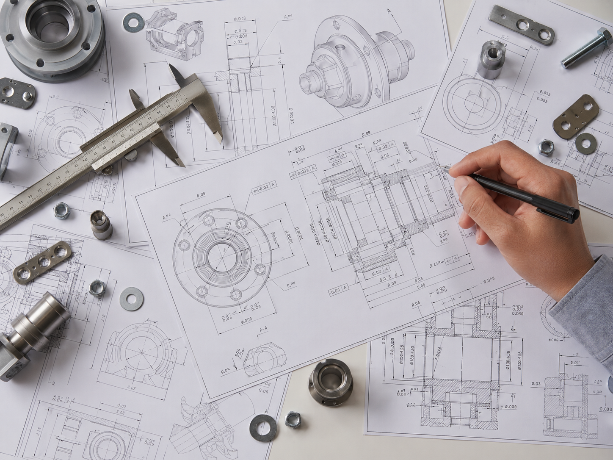

CAD / Mühendislik14.04.2026
Mühendislik Uygulamaları: Yazılım Devrimi
SolidWorks, CATIA ve AutoCAD gibi araçların mühendislik üretkenliğine etkisi.
Yazıyı OkuTeknik Blog
Mekatronik, otomasyon, gömülü sistemler ve mühendislik teknolojileri üzerine Türkçe içerikler.

SolidWorks, CATIA ve AutoCAD gibi araçların mühendislik üretkenliğine etkisi.
Yazıyı OkuBağlı robotlar, IoT sistemleri ve güvenli tasarım düşüncesi.
Yazıyı OkuAkıllı üretim, dijital ikiz ve yapay zekanın mekatronikteki yeri.
Yazıyı OkuArduino dünyasına başlamak için temel devre ve kod mantığı.
Yazıyı OkuHangi projede hangi platform daha mantıklı?
Yazıyı Oku